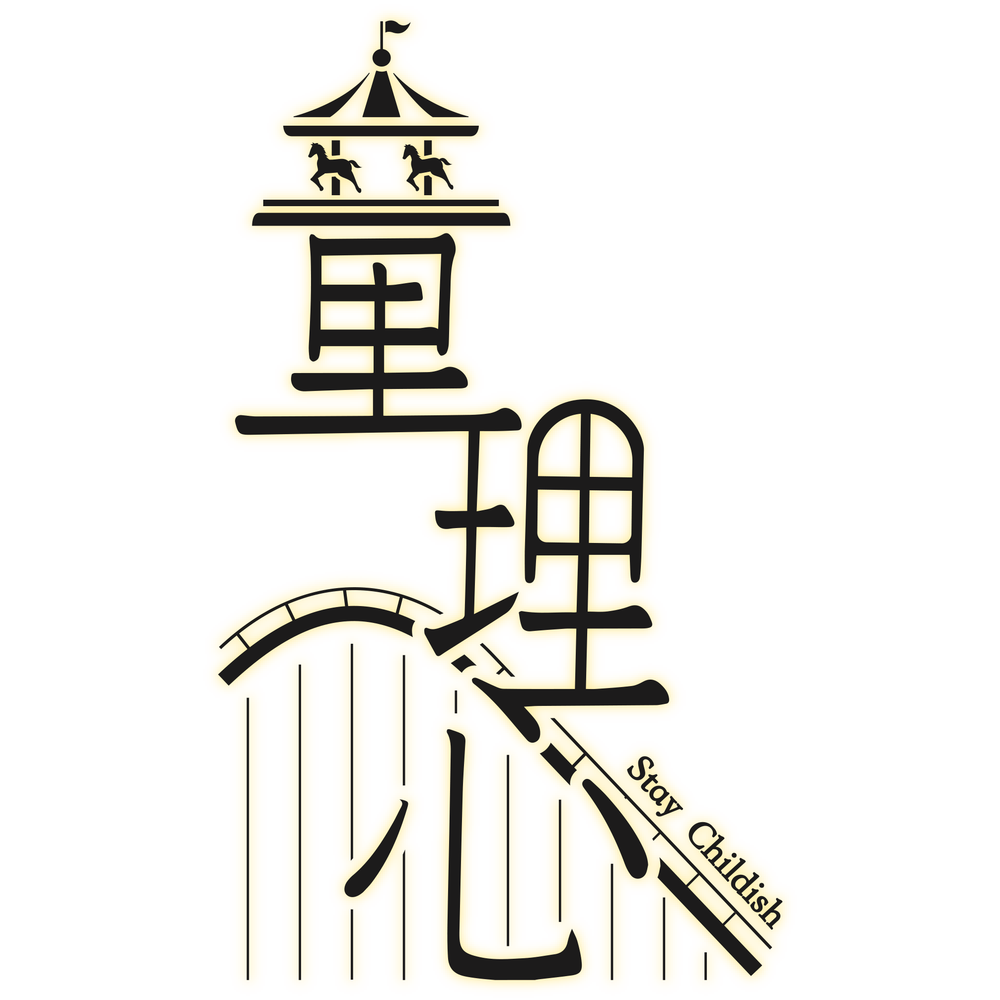
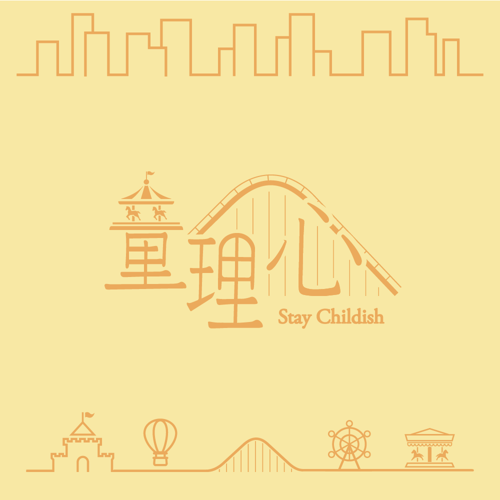

童理心
心理測驗
動畫欣賞
活動紀錄
團隊介紹
首頁
心理測驗
動畫欣賞
活動紀錄
團隊介紹

童理心是什麼？
社會化是每人必經的階段，也是思想的改變，
孩子提早社會化，失去以往的純淨；
大人經過社會化後則漸漸失去童年純真的勇氣。
問題不再於長大，
而是我們忘了曾經是小孩。
童真與社會化並無優劣之分，
我們期望在社會化與童真之間找到平衡，
這就是我們每個人最獨特的演化方式。

你的童理心指數有多少？
在我們的成長當中或多或少，
都會受到環境的影響，讓我們變成社會化。
於是我們透過小小的心理測驗，
讓你可以測量出自己的童理心指數是多少，
並且給予你後續的建議與回饋。
開始測驗
【耶誕時光的祝福】
日期｜104/12/24（四）～ 12/25（五）
地點｜淡江大學
【勇氣大考驗】
日期｜105/3/28（一）～ 4/1（五）
地點｜淡江大學
【畢業製作校內展】
日期｜105/4/25（一）～ 4/29（五）
地點｜淡江大學 黑天鵝展示廳
© 2016 介子流｜淡江資傳15th畢業成果展｜童理心